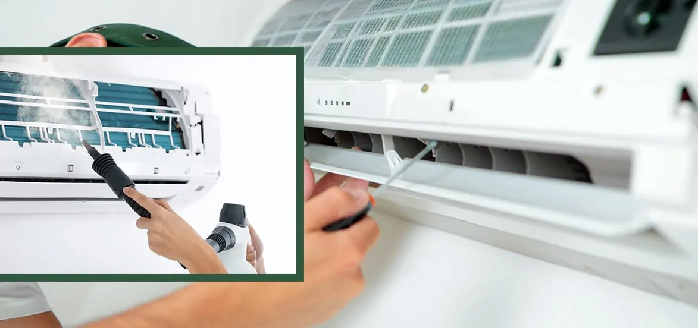

Can an AC tune-up help my air conditioner last longer?

Both the outdoor and interior units are cleaned to eliminate any dirt or debris that might obstruct airflow and reduce the performance of the system. Checking and adjusting the amounts of refrigerant to meet manufacturer guidelines. Several mechanical components are examined for signs of wear and probable failure. The outcome is a more efficient and dependable air conditioning system. Regular AC repair is an essential component of any comprehensive home maintenance program. Your cooling system will last longer if you do regular maintenance on it. In this regard, you can hire professionals for air conditioner repair services at an affordable range.
When was the last time you gave second consideration to your home's air conditioner? The majority of households neglect their air conditioners until there is a problem. Unfortunately, by the time a problem arises, you will be living in a heated house and may be faced with expensive repairs. Like your automobile, your air conditioner will benefit greatly from periodic maintenance.
Tips to AC Tune-Up for Staying your Air Conditioner Last Longer
The System's Typical Lifespan
A typical air conditioner can last between 10 and 15 years. Nevertheless, some systems fail before the 10-year mark, while others might endure up to 20 years. What is the distinction? The main reason behind that is the life span of your ac unit depends on how well you take care of your air conditioner. If you take adequate care of your system, it will have a lifetime of close to 15 years. A neglected system, however, may die around or even before its 10th anniversary.
Scheduled Maintenance: When and How Often
You should get your air conditioner serviced once a year at the very least. The best time to cool your home is just before peak season, which is usually in springtime or late winter. Many companies provide complete yearly maintenance plans to assist you in keeping up with this. Besides this, some repair companies provide bronze, silver, and gold packages so that you may choose the service plan that best meets your requirements. Sometimes, priority booking for servicing and discounts on repairs are both included in these packages in addition to your yearly ac tune-up services.
Some other tips that can extend the life of your ac unit
Not only can you schedule expert maintenance to lengthen the life of your cooling system, but there are other things you can do as well. To make your system last longer, do the following tasks:
Change the filter
The air filter should be replaced each one to 3 months, depending on how often the air conditioner is used. If it must work harder to draw air through a filthy filter, it will put additional pressure on both the interior and outdoor units, which will reduce the system's longevity.
The landscape around the structure
Clear a minimum of two feet of space around your air conditioner in all directions. Cut back grass and bushes, and remove leaves, sticks, and other garbage from the area. This is another approach to ensuring that your air conditioner has enough ventilation.
Pay strict attention
Any strange sounds or smells emanating from your ac unit should be investigated. As soon as you find anything abnormal, call technicians for an ac checkup. By scheduling an air conditioner repair as soon as possible, you may avoid difficulties that can cause more system damage.
Tremendous Benefits of Regular AC Tune-Up
Increased Productivity
If you observe an increase in your energy expenses, this may be due to a lack of air conditioning maintenance. Without regular maintenance, air leaks and the accumulation of dirt and other pollutants can cause your AC to lose efficiency. However, a professional air conditioning tune-up may restore your unit's efficiency.
Air conditioner efficiency should always come first while cooling your house. Your air conditioning system will put in a lot of effort throughout the hot months of the year. As a result, they will be forced to work more than necessary. This indicates that your unit will begin to malfunction and that your cooling expenses and home's temperature will begin to rise.
Save Cash
When it comes to routine ac maintenance service, it is not uncommon to incur extra costs. However, the contrary is true. By arranging periodic maintenance for your air conditioner, you may save money in the short and long term. A well-maintained air conditioner may significantly reduce monthly energy bills.
Constant Chilling
In the summer, it is always annoying when your house is chilly one minute and warms the next. Another option is to divide the house into two separate rooms: a cold one and one that is hot, like two separate refrigerators. A poorly maintained air conditioner has the unfortunate side effect of providing uneven cooling. When it's working correctly, your air conditioner should be able to reliably maintain the right temperature throughout your house.
Prolonged life expectancy
Many air conditioning systems have a lifespan of between 15 and 20 years, depending on their type and brand, frequency of usage, and, most importantly, maintenance. In addition to increasing the machine's energy efficiency, annual maintenance also helps avoid malfunctions. Additionally, they will increase the AC's longevity.
A device that has accumulated filth and dust over time must work harder, resulting in increased tear and wear. In addition, if faulty components are not replaced, the whole air conditioner is susceptible to harm. A tune-up will not make your air conditioner last forever, but it will increase its likelihood of lasting longer.
Keeping the Warranty in Force
As part of their warranty policy, the majority of air conditioning manufacturers require a trained technician to examine the unit once a year. Otherwise, the warranty would be ruled null and void, and you will lose access to the incentive if the air conditioner fails in the future.
Enhancement of Indoor Air Quality
Over time, debris, dust, and other impurities may clog the filter of your device. Without routine AC tune-up services, your system will ultimately release these contaminants into your home's air via ducting. These are the particles and pollutants that you must breathe in.
If you are sensitive to dirt or suffer from allergies, an A/C tune-up may lower the number of toxins entering your home, making it easier for you to breathe.
The Financial
Air conditioning tune-ups offer homeowners a useful service. They recover a significant portion of the AC's lost efficiency and capacity. In addition, tune-ups increase dependability by identifying issues before they contribute to breakdowns. However, energy savings seldom cover the expense of an annual tune-up.
Recent studies conducted in both the Midwest and California indicated that home applications saved an average of 100 kWh per year, or about 15. Units with a problem with refrigerant charge may save two or three times as much. Savings are contingent on the AC load, environment, and degree of temperature control.
How You Can Act
Individuals may do a variety of essential AC maintenance tasks. Just be cautious not to harm the unit. Excessive dirt buildup on the equipment is the leading cause of the majority of AC system issues. Before operating on any electrically powered device, power must be disconnected. Not certain? Call a professional.
- Using a hose, spray the coils from the interior of the unit outward to dislodge any dirt that has been embedded in the coils.
- Take care not to bend or otherwise harm the fins on the coils since clean, straight fins are the most efficient at radiating heat outside.
- Consider buying a "fin comb" online to straighten broken fins if several fins have been damaged by hail or similar impacts.
- Change the furnace filter every three months and ensure enough airflow over the furnace's cooling coil by keeping the majority of the home's vents open.
Conclusion
You might have got a good idea about what is included in an air conditioner tune-up. You know that an air conditioner unit can last go up to 10 to 15 years. But sometimes, your ac unit can break before 10 years. It is because you may not provide adequate maintenance services to your unit. On the other hand, if you provide regular ac checkups, then your unit can endure up to 20 years or more. You can also book the ac tune-up services from recognized companies and maintain the health of your ac unit.